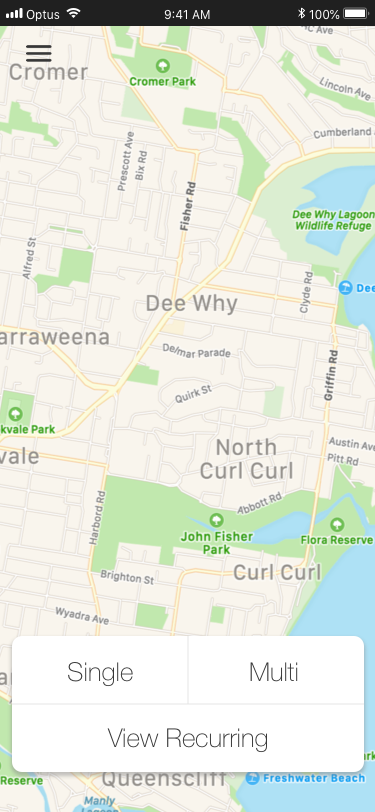
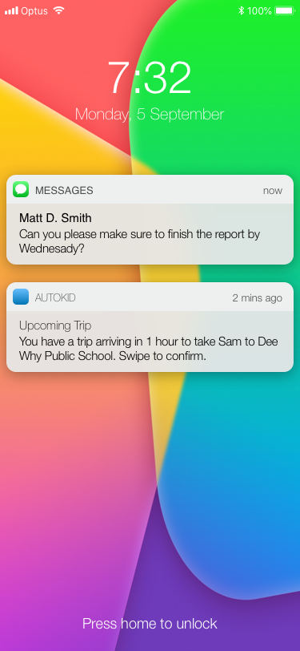
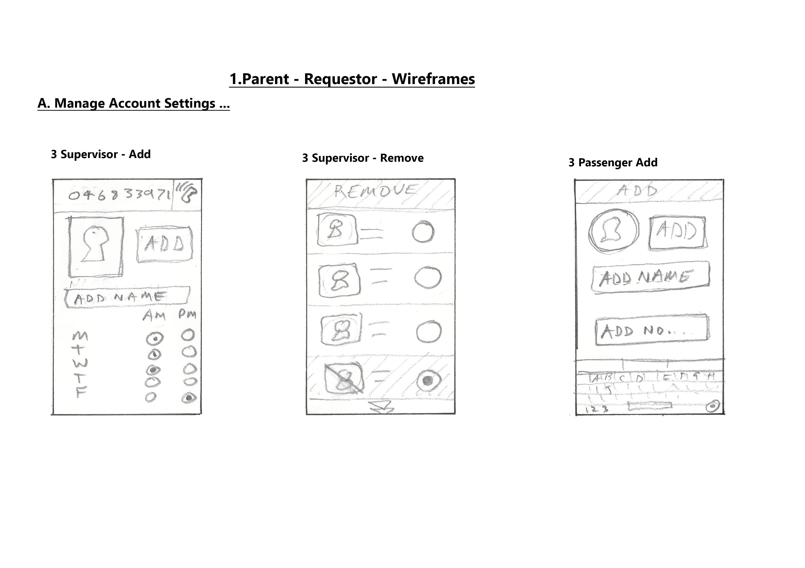
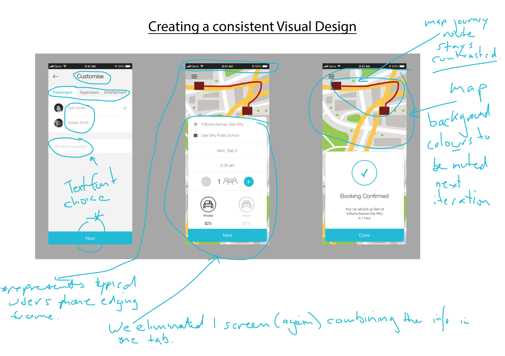
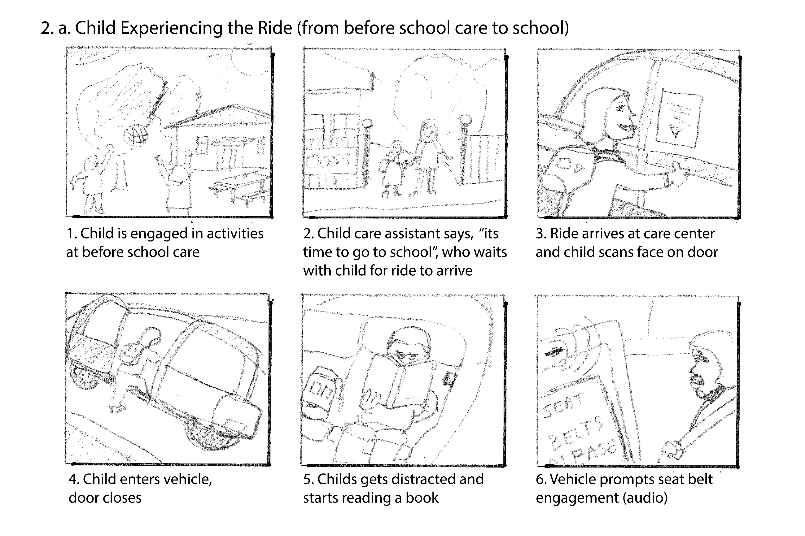
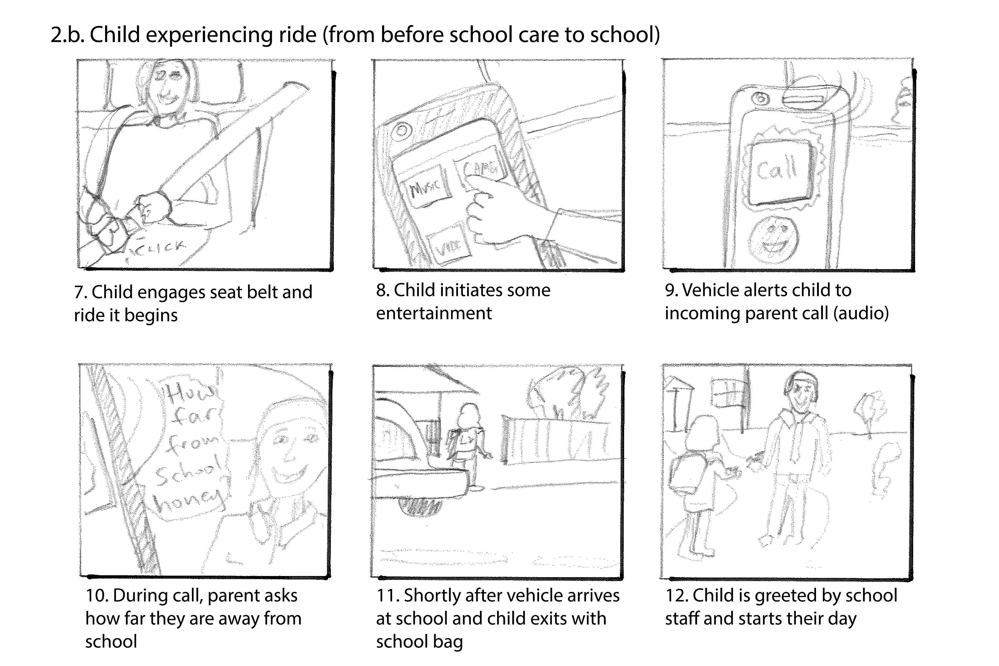
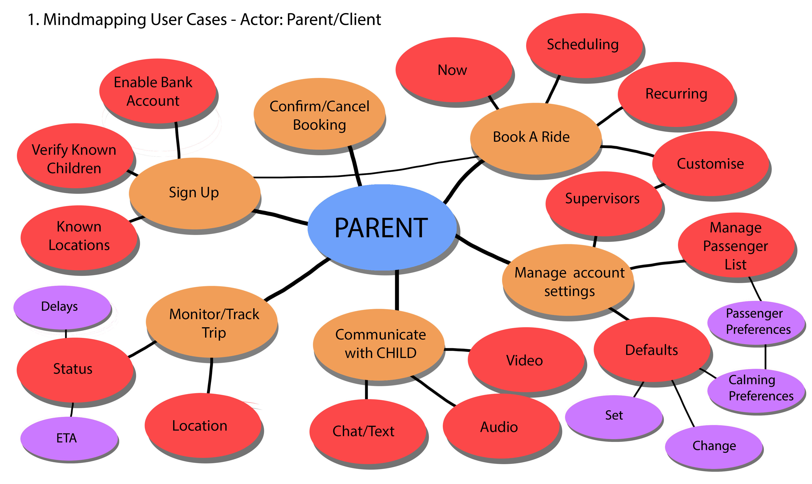
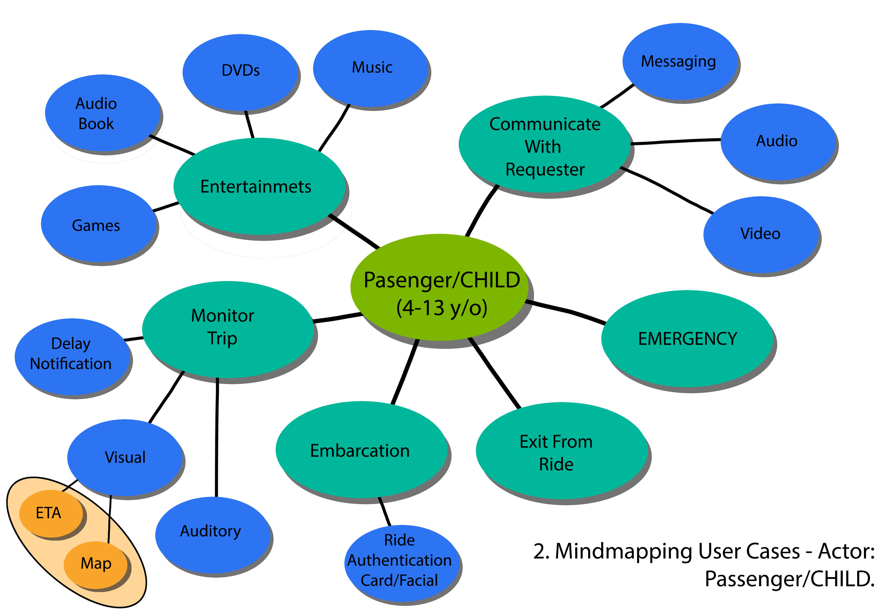
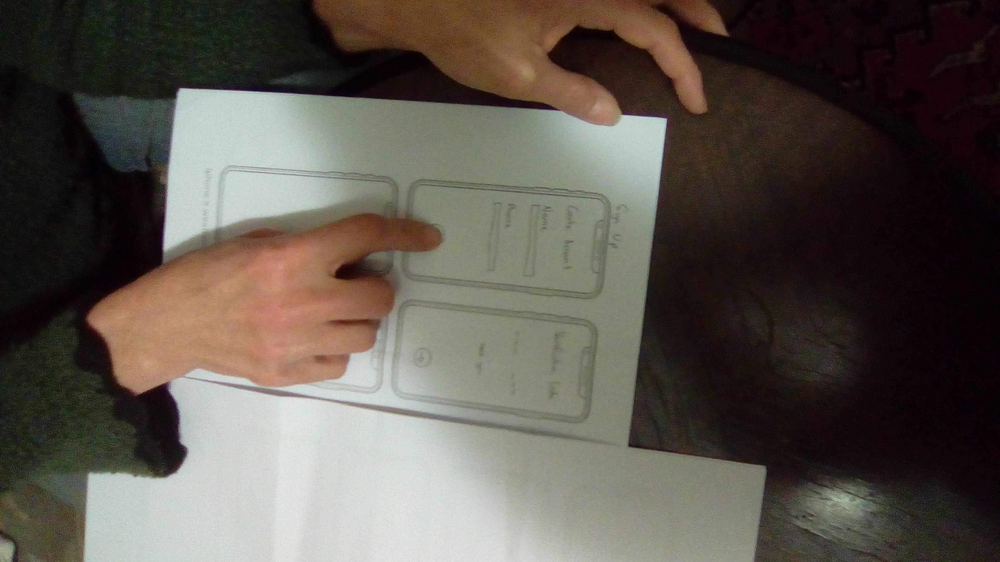
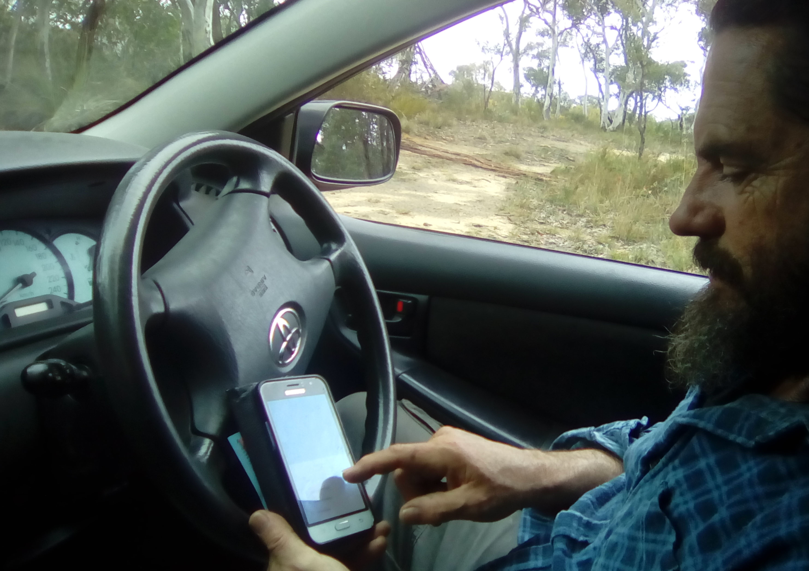

A final stage UI of landing and notification screens.
LANDING PAGE
 Figure 1.1 - Landing page, to book or review trips.NOTIFICATION - 1 HOUR PRIOR
 Figure 1.2 - Notification page, received 1 hour before service pick-up.The following are design iterations from the beginning of planning, through ideation to UI testing.
WIREFRAMES
Early Low Fidelity iterations of easy to imagine UI screens, before detailed scenario planning- getting the ball rolling... Learning which elementaare necessary, where best to align them and how the visual form is readable for user ease
1.1 WIREFRAMES: Low Fidelity Hand Drawn
Later Hi fidelity iterations, after much design consideration and preliminary UI Testing. Annotations clearly communicate next stage alterations or questions which communicate accross the design team and document staged progress
1.2 WIREFRAMES: Hi Fidelity SKETCH Drawn + Annotations
STORYBOARDS
Passenger/Child Storyboard action points and UI affordances: panels 1-6. Passenger embarkaton, and seat belt security system modelled
2.1 STORYBOARD: Passenger/Child Scenario 1-6 frames
Passenger/Child Storyboard action points and UI affordances: panels 7-12 Passenger entertainment engagement and incoming Parent facetime call, as wella s disembarkation
2.2 STORYBOARD: Passenger/Child Scenario 7-12 frames/p>
MINDMAPPING
Parent/Client mindmap iterate all the possible, and necessary connections between the UI interface in sequence. Earlier stage without colours
3.1 MINDMAP: Parent/Client
Passenger/Child mindmap iterate the UI action points showing the pathways to each interation. Colour differentiation from Parent/Client for visual review clarity
3.2 MINDMAP: Passenger/Child
UI TESTING
Early stage Low Fidelity UI testing assists in correctly appraising the flow and readability, and comprehension of the design. Pointing and touching a paper prototype of screens and Q and A reveals the Users actual perceptions of the interface
4.1 UI TESTING: Early Low Fidelity Wireframe prototype screens and flows
Using a phone simulation prototype like POP, in location context, allows later stage assessments of readability, design comprehension, and flow of the hi fidelity prototype.
4.2 UI TESTING: Later Hi Fidelity SKETCH prototype screens and flows,(in context)